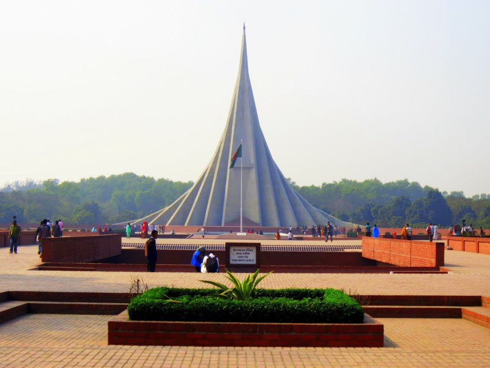

Victory to Bengal
Victory to Bengal
History of Bangladesh
 After the demise of British Empire in 1947, Bengal was partitioned as a province of West Pakistan with being renamed as East Pakistan. Dhaka was declared as its capital. Despite of adequate resources and demographic weight of East Pakistan, the entire Pakistan’s government and military was largely dominated by the upper classes from the west.
After the demise of British Empire in 1947, Bengal was partitioned as a province of West Pakistan with being renamed as East Pakistan. Dhaka was declared as its capital. Despite of adequate resources and demographic weight of East Pakistan, the entire Pakistan’s government and military was largely dominated by the upper classes from the west.
Most Famous Place of The Week
This is the most famous place of the week. This place was choosen from our website survey where everybody voted for the best place to visit.
This is a webpage about Places to see in Bangladesh for tourists.